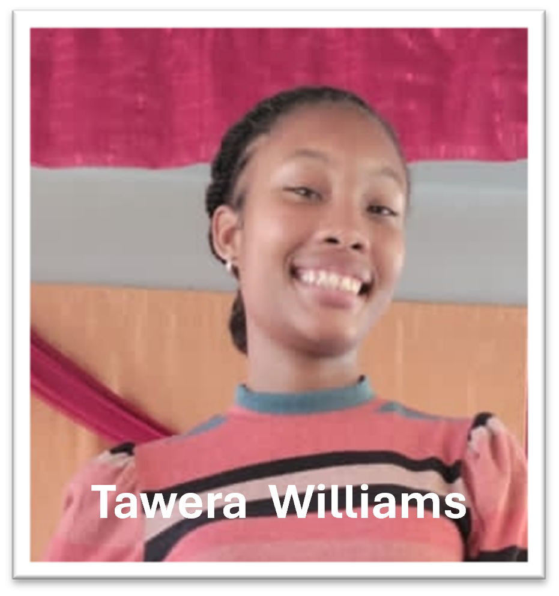
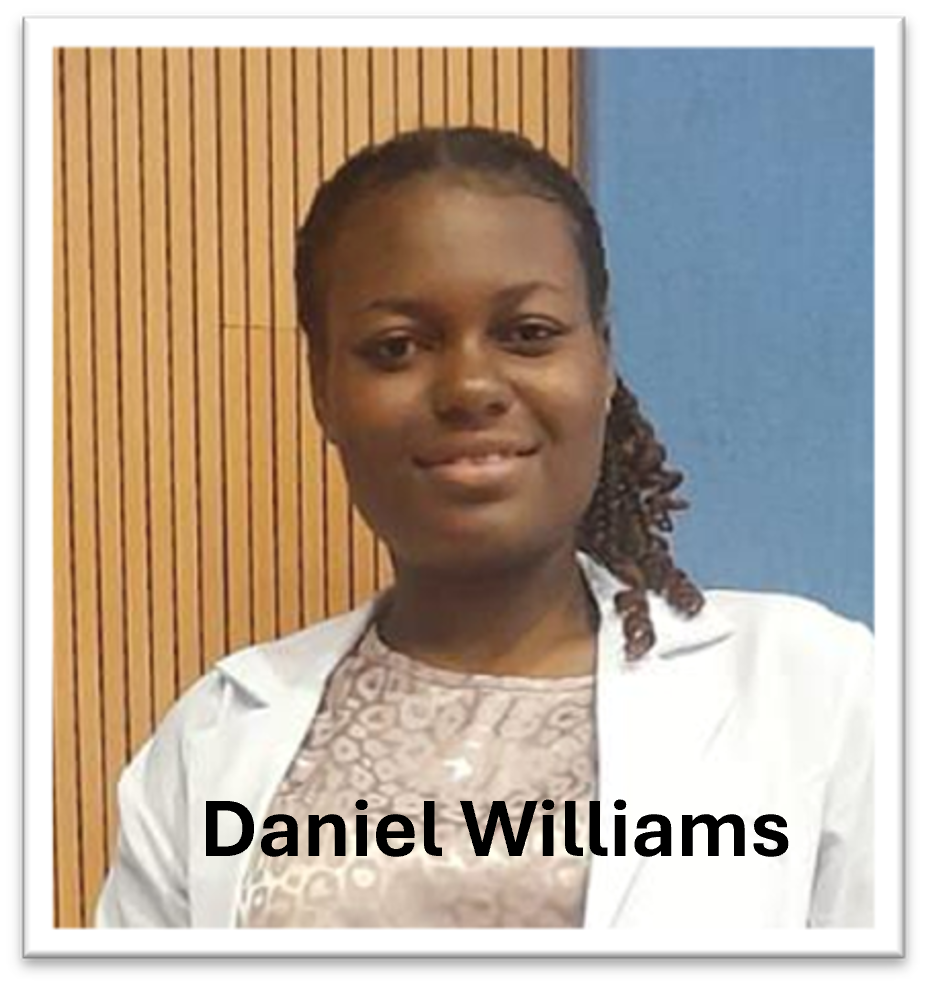

I hope this letter finds you well and in high spirits. I am writing to introduce two dedicated Seventh Day Baptist young adults from Jamaica: Tawera Williams, a first-year Biochemistry student from Old Harbour SDB Church, and Daniel Williams, a first-year Medical student from Montego Bay SDB Church. They have been granted the incredible opportunity to participate in the Summer Christian Service Corps (SCSC) program in the USA and Canada.The SCSC program is renowned for its impactful work in leadership training, spreading the gospel, supporting local communities, and fostering spiritual growth. Tawera Williams; and Daniel Williams. Tawera and Daniel, both deeply committed to their faith and passionate about missionary work, have been selected to join this program, where they will have the chance to serve, learn, and grow in their ministry.


However, they face significant financial hurdles in making this journey possible. The remaining cost for their participation, including travel, accommodation, and other necessary expenses, is $1,000 each. We are seeking the support of generous churches like yours to help make their mission a reality. We humbly ask for your church's support through a financial contribution to help cover these costs. Any amount you can provide will make a substantial difference and will be deeply appreciated. Your support will not only enable Tawera and Daniel to participate in the SCSC program but will also contribute to the broader mission of spreading God's word and love. Please use this link or the qr code below to donate. thank you in advance for your generosity and prayers. May God continue to bless your ministry and all the wonderful work you do in His name. - Rev. Garfield Miller, SDB Missionary Society